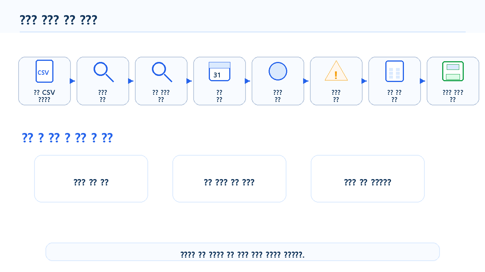
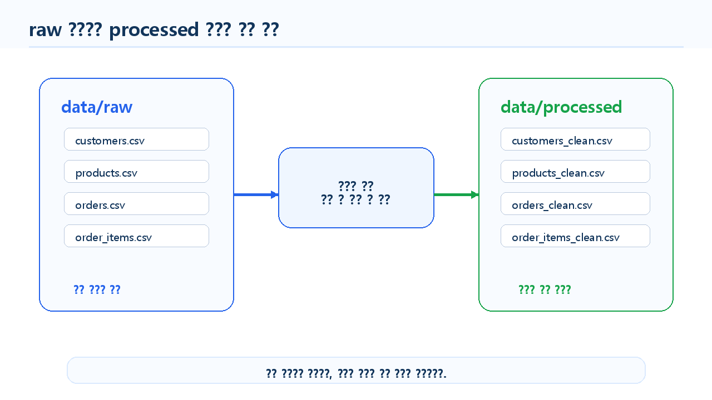
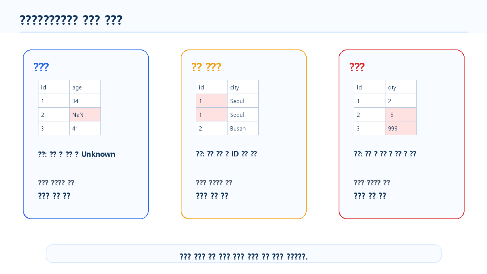
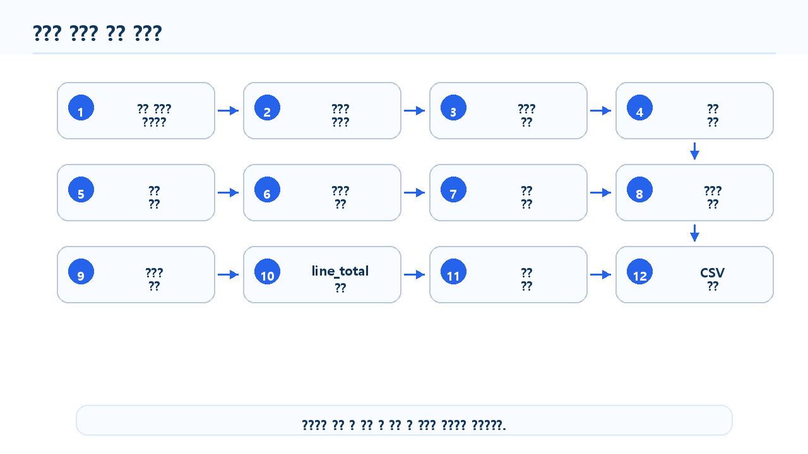
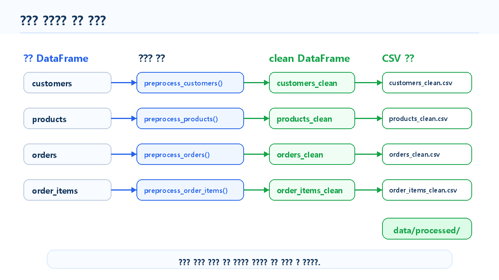

5장 데이터 전처리
이 장에서는 Chapter 4에서 pandas 기본 분석을 수행하면서 발견할 수 있는 데이터 문제를 정리하고, 분석 가능한 형태로 데이터를 가공하는 방법을 배웁니다. 데이터 분석에서 전처리는 분석 결과의 품질을 결정하는 매우 중요한 단계입니다.
현실의 데이터는 처음부터 완벽하지 않습니다. 값이 비어 있거나, 같은 값이 여러 방식으로 기록되어 있거나, 날짜가 문자열로 저장되어 있거나, 숫자에 쉼표가 포함되어 있거나, 중복 데이터가 섞여 있을 수 있습니다. 이런 문제를 확인하지 않고 분석하면 결과가 왜곡될 수 있습니다.
이번 장에서는 온라인 쇼핑몰 고객·상품·주문 데이터를 대상으로 결측치, 중복값, 데이터 타입, 날짜 컬럼, 문자열 표기, 파생 컬럼, 이상값을 점검하고 정리합니다. 또한 전처리 과정을 함수로 만들어 반복 가능한 형태로 관리하는 방법까지 실습합니다.
데이터 전처리의 핵심은 단순히 데이터를 “깨끗하게 만드는 것”이 아닙니다. 분석 목적에 맞게 데이터를 신뢰할 수 있는 상태로 정리하는 것입니다.
수업 시간 구성
| 구성 | 권장 시간 |
|---|---|
| 데이터 전처리 개념 이해 | 30분 |
| 결측치 확인과 처리 실습 | 45분 |
| 중복 데이터 확인과 처리 실습 | 35분 |
| 데이터 타입 변환 실습 | 45분 |
| 날짜와 문자열 데이터 정리 | 45분 |
| 이상값 확인과 처리 방향 판단 | 40분 |
| 전처리 함수와 저장 파일 만들기 | 45분 |
| LLM을 활용한 전처리 코드 검토 | 30분 |
| 연습 문제 및 심화 과제 | 60~90분 |
핵심 실습만 압축하면 약 3시간 수업으로 진행할 수 있습니다. 전체 코드 작성, LLM 검토, 연습 문제와 심화 과제까지 포함하면 5~6시간 또는 1~2회차 수업으로 확장할 수 있습니다.
1. 학습 목표
이 장을 마치면 학습자는 다음을 할 수 있습니다.
- 데이터 전처리가 필요한 이유를 설명할 수 있습니다.
- 결측치의 개수와 비율을 확인할 수 있습니다.
- 결측치를 삭제, 대체, 별도 범주 처리 중 어떤 방식으로 다룰지 판단할 수 있습니다.
- 중복 데이터와 중복 ID를 구분해 확인할 수 있습니다.
- 문자열로 저장된 숫자를 숫자형으로 변환할 수 있습니다.
- 문자열로 저장된 날짜를 날짜형으로 변환할 수 있습니다.
- 문자열 데이터의 공백과 대소문자 차이를 정리할 수 있습니다.
- 이상값 후보를 확인하고 처리 방향을 판단할 수 있습니다.
- 전처리 전후 데이터 크기와 결측치 변화를 비교할 수 있습니다.
- 전처리된 데이터를
data/processed폴더에 저장할 수 있습니다. - LLM이 제안한 전처리 코드를 실제 데이터 구조와 비교해 검증할 수 있습니다.
2. 이번 장에서 만들 결과물
이번 장에서는 원본 데이터를 분석에 사용하기 좋은 형태로 정리한 전처리 데이터셋과 전처리 점검 요약표를 만듭니다.
이번 장에서 만들 결과물은 다음과 같습니다.
- 결측치 개수와 비율 요약표
- 중복 행과 중복 ID 확인 결과
- 날짜형으로 변환된
order_date,signup_date - 문자열 표기가 정리된 범주형 컬럼
- 숫자형으로 변환된 가격·수량 컬럼
- 주문 상세 금액
line_total파생 컬럼 - 전처리 전후 비교표
- 전처리된 CSV 파일
- 전처리 함수 모음
- LLM 전처리 코드 검토 프롬프트와 검증 결과
이 장에서 필요한 그림과 화면 예시는 각 개념이 등장하는 위치에 함께 배치합니다.

3. 핵심 개념
3.1 데이터 전처리란 무엇인가
데이터 전처리는 원본 데이터를 분석에 적합한 형태로 정리하는 과정입니다. 데이터 분석에서는 원본 데이터를 그대로 사용하는 경우보다, 분석 목적에 맞게 정리한 뒤 사용하는 경우가 훨씬 많습니다.
전처리에서 자주 수행하는 작업은 다음과 같습니다.
| 전처리 작업 | 설명 | 예시 |
|---|---|---|
| 결측치 처리 | 비어 있는 값 확인 및 처리 | 나이 결측치 대체 |
| 중복 처리 | 중복 행 또는 중복 ID 확인 | 고객 ID 중복 확인 |
| 타입 변환 | 문자열을 숫자나 날짜로 변환 | "10,000" → 10000 |
| 문자열 정리 | 공백, 대소문자, 표기 차이 정리 | Seoul → Seoul |
| 날짜 처리 | 날짜 컬럼에서 월, 요일 추출 | order_month 생성 |
| 파생 컬럼 생성 | 기존 컬럼으로 새 컬럼 생성 | line_total 생성 |
| 이상값 확인 | 너무 크거나 작은 값 확인 | 음수 수량, 비정상 가격 |
| 저장 | 정리된 데이터를 별도 파일로 저장 | data/processed 저장 |
전처리는 한 번 하고 끝나는 작업이 아닙니다. 분석을 진행하면서 새로운 문제가 발견되면 다시 전처리 단계로 돌아가 수정해야 합니다.
3.2 원본 데이터와 전처리 데이터
전처리에서는 원본 데이터를 직접 덮어쓰지 않는 것이 좋습니다. 원본 데이터는 그대로 보관하고, 전처리된 데이터는 별도 폴더에 저장합니다.
이번 교재에서는 다음 구조를 사용합니다.
data/
├─ raw/
│ ├─ customers.csv
│ ├─ products.csv
│ ├─ orders.csv
│ └─ order_items.csv
└─ processed/
├─ customers_clean.csv
├─ products_clean.csv
├─ orders_clean.csv
└─ order_items_clean.csvdata/raw는 원본 데이터 폴더입니다.
data/processed는 전처리 결과를 저장하는 폴더입니다.
원본 데이터와 전처리 데이터를 분리하면 다음 장점이 있습니다.
- 원본 데이터를 언제든 다시 확인할 수 있습니다.
- 전처리 과정에서 실수해도 원본을 복구할 수 있습니다.
- 전처리 전후 결과를 비교할 수 있습니다.
- 재현 가능한 분석 흐름을 만들 수 있습니다.
- 보고서에 데이터 처리 과정을 명확히 설명할 수 있습니다.

3.3 결측치 처리란 무엇인가
결측치는 값이 비어 있는 상태를 의미합니다. 결측치는 분석 결과에 직접적인 영향을 줄 수 있기 때문에 반드시 확인해야 합니다.
결측치 처리 방법은 크게 세 가지입니다.
| 방법 | 설명 | 예시 |
|---|---|---|
| 삭제 | 결측치가 있는 행 또는 컬럼 제거 | 나이가 없는 고객 행 제외 |
| 대체 | 평균, 중앙값, 최빈값 등으로 채움 | 나이 결측치를 중앙값으로 대체 |
| 별도 범주 | 알 수 없음으로 표시 | 도시 결측치를 Unknown으로 처리 |
결측치가 있다고 해서 무조건 삭제하면 안 됩니다. 삭제하면 데이터 수가 줄어들고, 특정 그룹이 분석에서 제외될 수 있습니다. 반대로 무조건 평균값으로 채우는 것도 위험합니다. 결측치가 발생한 이유와 분석 목적을 함께 고려해야 합니다.
3.4 중복 데이터 처리란 무엇인가
중복 데이터는 같은 행이 반복되거나, 고유해야 할 ID가 중복된 경우를 의미합니다.
중복에는 두 가지가 있습니다.
| 구분 | 설명 | 예시 |
|---|---|---|
| 전체 행 중복 | 모든 컬럼 값이 같은 행이 반복 | 같은 고객 행이 두 번 저장 |
| 기준 ID 중복 | 고유해야 할 ID가 중복 | customer_id 중복 |
중복 데이터도 무조건 삭제하면 안 됩니다. 데이터의 의미에 따라 자연스러운 중복이 있을 수 있습니다.
예를 들어 order_items에서는 같은 order_id가 여러 번 나오는 것이 정상입니다. 한 주문에 여러 상품이 포함될 수 있기 때문입니다. 반면 customers에서 같은 customer_id가 여러 번 나오면 고객 정보 중복 가능성이 있습니다.
3.5 데이터 타입 변환이 필요한 이유
데이터 타입은 분석에 큰 영향을 줍니다.
예를 들어 숫자처럼 보이는 가격 컬럼이 문자열로 저장되어 있다면 합계나 평균을 계산할 수 없습니다. 날짜처럼 보이는 주문일 컬럼이 문자열이라면 월별 분석을 하기 어렵습니다.
| 문제 상황 | 필요한 처리 |
|---|---|
"10,000"처럼 저장된 가격 | 쉼표 제거 후 숫자형 변환 |
"2024-01-15"처럼 저장된 날짜 | 날짜형 변환 |
" Seoul "처럼 앞뒤 공백이 있는 문자열 | 공백 제거 |
"seoul", "SEOUL"처럼 대소문자가 섞인 값 | 표기 통일 |
"완료", "completed"처럼 언어가 섞인 상태값 | 상태값 매핑 |
데이터 타입 변환은 전처리의 핵심 작업입니다.
3.6 이상값이란 무엇인가
이상값은 일반적인 범위를 벗어난 값입니다. 이상값은 실제로 중요한 의미를 가진 값일 수도 있고, 입력 오류일 수도 있습니다.
예를 들어 다음 값들은 확인이 필요합니다.
- 나이가 150세인 고객
- 상품 가격이 0원인 상품
- 주문 수량이 음수인 데이터
- 단가가 비정상적으로 큰 주문
- 주문일이 분석 기간보다 훨씬 오래된 데이터
이상값은 무조건 삭제하지 않습니다. 먼저 실제 가능한 값인지, 입력 오류인지, 분석 목적에 영향을 주는지 확인해야 합니다.

4. 실습 시나리오
이번 장의 실습 시나리오는 다음과 같습니다.
온라인 쇼핑몰 운영 데이터를 분석하기 전에 원본 CSV 파일을 점검하고, 결측치·중복값·데이터 타입·날짜·문자열 표기 문제를 정리합니다. 전처리 전후 데이터 상태를 비교한 뒤, 정리된 데이터를 data/processed 폴더에 저장합니다.
이번 장에서 사용할 주요 전처리 질문은 다음과 같습니다.
| 전처리 질문 | 사용할 데이터 | pandas 기능 |
|---|---|---|
| 결측치가 있는 컬럼은 무엇인가? | 전체 데이터 | isna().sum() |
| 결측치 비율은 얼마나 되는가? | 전체 데이터 | isna().mean() |
| 중복 행이 있는가? | 전체 데이터 | duplicated() |
| 고객 ID는 고유한가? | customers | duplicated() |
| 주문일은 날짜형인가? | orders | pd.to_datetime() |
| 가격과 수량은 숫자형인가? | products, order_items | pd.to_numeric() |
| 지역명과 상태값 표기가 일관적인가? | customers, orders | str.strip(), replace() |
| 주문 상세 금액을 계산할 수 있는가? | order_items | 파생 컬럼 |
| 전처리 결과를 저장했는가? | 전체 데이터 | to_csv() |
이번 장의 실습 흐름은 다음과 같습니다.
- 원본 CSV 파일 불러오기
- 전처리 결과 저장 폴더 만들기
- 결측치 개수와 비율 확인
- 결측치 처리 전략 정하기
- 중복 행과 중복 ID 확인
- 날짜 컬럼 변환
- 숫자형 컬럼 변환
- 문자열 공백과 표기 차이 정리
- 이상값 후보 확인
- 파생 컬럼 생성
- 전처리 전후 비교
- 전처리된 CSV 파일 저장
- LLM에게 전처리 코드 검토 요청
- 사람이 최종 검증

5. 실습 코드
이번 장의 전체 실습은 다음 Notebook에서 진행합니다.
notebooks/ch05_data_preprocessing.ipynb본문에는 핵심 코드만 제공합니다.
5.1 기본 패키지 불러오기
from pathlib import Path
import pandas as pd
import numpy as np데이터 경로를 설정합니다.
raw_dir = Path("data/raw")
processed_dir = Path("data/processed")
report_dir = Path("reports")
processed_dir.mkdir(parents=True, exist_ok=True)
report_dir.mkdir(exist_ok=True)Notebook을 notebooks 폴더 안에서 실행하는 경우에는 다음처럼 경로를 조정할 수 있습니다.
raw_dir = Path("../data/raw")
processed_dir = Path("../data/processed")
report_dir = Path("../reports")
processed_dir.mkdir(parents=True, exist_ok=True)
report_dir.mkdir(exist_ok=True)5.2 원본 데이터 불러오기
customers = pd.read_csv(raw_dir / "customers.csv")
products = pd.read_csv(raw_dir / "products.csv")
orders = pd.read_csv(raw_dir / "orders.csv")
order_items = pd.read_csv(raw_dir / "order_items.csv")전처리 전 데이터 크기를 확인합니다.
raw_shapes = pd.DataFrame({
"dataset": ["customers", "products", "orders", "order_items"],
"rows": [customers.shape[0], products.shape[0], orders.shape[0], order_items.shape[0]],
"columns": [customers.shape[1], products.shape[1], orders.shape[1], order_items.shape[1]]
})
raw_shapes5.3 원본 데이터 복사하기
전처리 과정에서 원본 DataFrame을 직접 수정하지 않기 위해 복사본을 만듭니다.
customers_clean = customers.copy()
products_clean = products.copy()
orders_clean = orders.copy()
order_items_clean = order_items.copy()이후 전처리는 _clean이 붙은 DataFrame에 적용합니다.
5.4 결측치 개수 확인하기
각 데이터셋의 결측치 개수를 확인합니다.
datasets = {
"customers": customers_clean,
"products": products_clean,
"orders": orders_clean,
"order_items": order_items_clean
}
for name, df in datasets.items():
print(f"\n[{name}]")
print(df.isna().sum())결측치 비율도 확인합니다.
for name, df in datasets.items():
print(f"\n[{name}] 결측치 비율(%)")
print((df.isna().mean() * 100).round(2))결측치 요약표를 만드는 함수를 작성합니다.
def missing_summary(df):
summary = pd.DataFrame({
"missing_count": df.isna().sum(),
"missing_ratio": (df.isna().mean() * 100).round(2)
})
return summary.sort_values("missing_count", ascending=False)
missing_summary(customers_clean)5.5 결측치 처리하기
고객 데이터의 age 컬럼에 결측치가 있다고 가정하고 처리합니다.
먼저 결측치 개수를 확인합니다.
customers_clean["age"].isna().sum()나이 컬럼은 숫자형이므로 중앙값으로 대체할 수 있습니다.
age_median = customers_clean["age"].median()
customers_clean["age"] = customers_clean["age"].fillna(age_median)나이처럼 극단값의 영향을 받을 수 있는 숫자형 컬럼은 평균보다 중앙값을 사용하는 편이 더 안정적일 수 있습니다. 예를 들어 일부 고객 나이가 비정상적으로 크거나 작으면 평균이 크게 흔들릴 수 있지만, 중앙값은 상대적으로 영향을 덜 받습니다.
처리 후 다시 확인합니다.
customers_clean["age"].isna().sum()도시 컬럼에 결측치가 있다면 Unknown으로 처리할 수 있습니다.
if "city" in customers_clean.columns:
customers_clean["city"] = customers_clean["city"].fillna("Unknown")결측치 처리 방법은 컬럼의 의미에 따라 달라집니다.
| 컬럼 유형 | 처리 예시 |
|---|---|
| 나이, 가격, 수량 같은 숫자 | 중앙값 또는 평균값 대체 |
| 도시, 성별, 카테고리 같은 범주 | Unknown 대체 |
| ID 컬럼 | 결측치가 있으면 행 제외 또는 원본 확인 |
| 날짜 컬럼 | 변환 실패값 확인 후 별도 처리 |
5.6 중복 행 확인하기
전체 행이 완전히 중복된 경우를 확인합니다.
for name, df in datasets.items():
print(name, df.duplicated().sum())중복 행을 제거하려면 다음처럼 작성할 수 있습니다.
customers_clean = customers_clean.drop_duplicates()
products_clean = products_clean.drop_duplicates()
orders_clean = orders_clean.drop_duplicates()
order_items_clean = order_items_clean.drop_duplicates()단, 중복 제거 전에는 어떤 행이 중복인지 먼저 확인하는 것이 좋습니다.
customers[customers.duplicated()]5.7 ID 기준 중복 확인하기
고유해야 하는 ID 컬럼의 중복 여부를 확인합니다.
customers_clean["customer_id"].duplicated().sum()products_clean["product_id"].duplicated().sum()orders_clean["order_id"].duplicated().sum()order_items에서는 order_id가 중복될 수 있습니다. 한 주문에 여러 상품이 포함될 수 있기 때문입니다. 대신 order_item_id가 있다면 해당 컬럼의 중복 여부를 확인합니다.
if "order_item_id" in order_items_clean.columns:
print(order_items_clean["order_item_id"].duplicated().sum())ID 기준 중복은 전체 행 중복보다 더 중요할 수 있습니다.
5.8 문자열 공백 제거하기
문자열 데이터에는 앞뒤 공백이 들어 있을 수 있습니다. 공백은 눈으로 잘 보이지 않지만 분석 결과를 왜곡할 수 있습니다.
예를 들어 "Seoul"과 " Seoul "은 서로 다른 값으로 인식됩니다.
문자열 컬럼의 앞뒤 공백을 제거합니다.
def strip_string_columns(df):
df = df.copy()
string_columns = df.select_dtypes(include="object").columns
for col in string_columns:
df[col] = df[col].where(
df[col].isna(),
df[col].astype(str).str.strip()
)
return dfwhere()를 함께 사용하면 결측치는 그대로 유지하면서, 실제 문자열 값에 대해서만 앞뒤 공백을 제거할 수 있습니다. 단순히 astype(str)만 사용하면 결측치가 "nan"이라는 문자열로 바뀔 수 있으므로 주의해야 합니다.
각 데이터셋에 적용합니다.
customers_clean = strip_string_columns(customers_clean)
products_clean = strip_string_columns(products_clean)
orders_clean = strip_string_columns(orders_clean)
order_items_clean = strip_string_columns(order_items_clean)5.9 범주형 값 표기 통일하기
도시명이나 주문 상태값은 표기가 섞여 있을 수 있습니다.
먼저 실제 값을 확인합니다.
customers_clean["city"].value_counts()orders_clean["order_status"].value_counts()주문 상태값을 통일하는 예시는 다음과 같습니다.
status_map = {
"complete": "completed",
"Complete": "completed",
"COMPLETED": "completed",
"완료": "completed",
"cancel": "cancelled",
"Cancel": "cancelled",
"CANCELLED": "cancelled",
"취소": "cancelled"
}
orders_clean["order_status"] = orders_clean["order_status"].replace(status_map)처리 후 다시 확인합니다.
orders_clean["order_status"].value_counts()실제 데이터에 어떤 값이 들어 있는지 확인한 뒤 매핑 규칙을 작성해야 합니다.
5.10 날짜 컬럼 변환하기
주문일 컬럼을 날짜형으로 변환합니다.
orders_clean["order_date"] = pd.to_datetime(
orders_clean["order_date"],
errors="coerce"
)가입일 컬럼도 날짜형으로 변환합니다.
if "signup_date" in customers_clean.columns:
customers_clean["signup_date"] = pd.to_datetime(
customers_clean["signup_date"],
errors="coerce"
)날짜 변환 실패 건수를 확인합니다.
print("order_date 변환 실패:", orders_clean["order_date"].isna().sum())
if "signup_date" in customers_clean.columns:
print("signup_date 변환 실패:", customers_clean["signup_date"].isna().sum())날짜 범위를 확인합니다.
print("주문 시작일:", orders_clean["order_date"].min())
print("주문 종료일:", orders_clean["order_date"].max())5.11 날짜 파생 컬럼 만들기
주문일에서 주문 월을 추출합니다.
orders_clean["order_month"] = orders_clean["order_date"].dt.to_period("M").astype(str)요일도 추출할 수 있습니다.
orders_clean["order_dayofweek"] = orders_clean["order_date"].dt.day_name()결과를 확인합니다.
orders_clean[["order_date", "order_month", "order_dayofweek"]].head()이후 월별 매출 분석이나 요일별 주문 분석에서 사용할 수 있습니다.
5.12 숫자형 컬럼 변환하기
가격, 수량, 단가 컬럼이 숫자형인지 확인합니다.
products_clean.dtypesorder_items_clean.dtypes숫자가 문자열로 저장되어 있을 가능성이 있다면 다음 함수를 사용할 수 있습니다.
def to_number(series):
return pd.to_numeric(
series.astype(str).str.replace(",", "", regex=False),
errors="coerce"
)상품 가격을 숫자형으로 변환합니다.
if "price" in products_clean.columns:
products_clean["price"] = to_number(products_clean["price"])주문 상세 수량과 단가를 숫자형으로 변환합니다.
if "quantity" in order_items_clean.columns:
order_items_clean["quantity"] = to_number(order_items_clean["quantity"])
if "unit_price" in order_items_clean.columns:
order_items_clean["unit_price"] = to_number(order_items_clean["unit_price"])변환 후 결측치가 생겼는지 확인합니다.
print(products_clean["price"].isna().sum())
print(order_items_clean["quantity"].isna().sum())
print(order_items_clean["unit_price"].isna().sum())5.13 이상값 후보 확인하기
숫자형 컬럼의 기본 통계를 확인합니다.
products_clean["price"].describe()order_items_clean[["quantity", "unit_price"]].describe()가격이 0 이하인 상품이 있는지 확인합니다.
products_clean[products_clean["price"] <= 0]수량이 0 이하인 주문 상세가 있는지 확인합니다.
order_items_clean[order_items_clean["quantity"] <= 0]단가가 0 이하인 주문 상세가 있는지 확인합니다.
order_items_clean[order_items_clean["unit_price"] <= 0]이상값 후보는 바로 삭제하지 않고 먼저 확인합니다. 실제 오류인지, 특별한 할인이나 이벤트 데이터인지 판단해야 합니다.
5.14 이상값 처리 예시
실습용 데이터에서 가격이나 수량이 0 이하인 데이터는 분석에서 제외한다고 가정해 보겠습니다.
products_clean = products_clean[products_clean["price"] > 0]
order_items_clean = order_items_clean[order_items_clean["quantity"] > 0]
order_items_clean = order_items_clean[order_items_clean["unit_price"] > 0]처리 후 크기를 확인합니다.
print(products_clean.shape)
print(order_items_clean.shape)실무에서는 삭제 기준을 보고서에 반드시 기록해야 합니다.
전처리 기준:
- price가 0 이하인 상품은 분석 대상에서 제외
- quantity가 0 이하인 주문 상세는 분석 대상에서 제외
- unit_price가 0 이하인 주문 상세는 분석 대상에서 제외이 코드는 실습을 위한 단순 처리 예시입니다. 실제 업무에서는 0원 상품이 이벤트 상품인지, 음수 수량이 환불 또는 취소를 의미하는지 먼저 확인해야 합니다. 따라서 이상값 처리는 삭제보다 확인과 기록이 먼저입니다.
5.15 주문 상세 금액 파생 컬럼 만들기
전처리된 수량과 단가를 사용해 line_total을 만듭니다.
order_items_clean["line_total"] = (
order_items_clean["quantity"] * order_items_clean["unit_price"]
)결과를 확인합니다.
order_items_clean[["quantity", "unit_price", "line_total"]].head()전체 매출 합계도 확인합니다.
order_items_clean["line_total"].sum()5.16 파일 간 키 관계 다시 확인하기
전처리 후에도 파일 간 키 관계가 유지되는지 확인합니다.
invalid_customers = orders_clean[
~orders_clean["customer_id"].isin(customers_clean["customer_id"])
]
invalid_orders = order_items_clean[
~order_items_clean["order_id"].isin(orders_clean["order_id"])
]
invalid_products = order_items_clean[
~order_items_clean["product_id"].isin(products_clean["product_id"])
]
print("customers에 없는 customer_id 수:", len(invalid_customers))
print("orders에 없는 order_id 수:", len(invalid_orders))
print("products에 없는 product_id 수:", len(invalid_products))전처리 과정에서 일부 행을 삭제했다면 키 관계가 달라질 수 있습니다. 따라서 전처리 전후 모두 확인하는 것이 좋습니다.
5.17 전처리 전후 비교하기
전처리 전후 데이터 크기를 비교합니다.
processed_shapes = pd.DataFrame({
"dataset": ["customers", "products", "orders", "order_items"],
"rows": [
customers_clean.shape[0],
products_clean.shape[0],
orders_clean.shape[0],
order_items_clean.shape[0]
],
"columns": [
customers_clean.shape[1],
products_clean.shape[1],
orders_clean.shape[1],
order_items_clean.shape[1]
]
})
comparison = raw_shapes.merge(
processed_shapes,
on="dataset",
suffixes=("_raw", "_processed")
)
comparison행 수가 줄어든 경우에는 어떤 기준으로 줄었는지 설명할 수 있어야 합니다.
5.18 전처리 결과 저장하기
전처리된 데이터를 data/processed 폴더에 저장합니다.
customers_clean.to_csv(processed_dir / "customers_clean.csv", index=False)
products_clean.to_csv(processed_dir / "products_clean.csv", index=False)
orders_clean.to_csv(processed_dir / "orders_clean.csv", index=False)
order_items_clean.to_csv(processed_dir / "order_items_clean.csv", index=False)저장된 파일을 확인합니다.
list(processed_dir.glob("*_clean.csv"))5.19 전처리 요약 보고서 저장하기
전처리 요약 내용을 Markdown 파일로 저장할 수 있습니다.
summary_text = f"""
# Chapter 5 데이터 전처리 요약
## 전처리 결과 파일
- customers_clean.csv
- products_clean.csv
- orders_clean.csv
- order_items_clean.csv
## 전처리 전후 데이터 크기
{comparison.to_markdown(index=False)}
## 주요 처리 내용
- 문자열 컬럼 앞뒤 공백 제거
- 주문 상태값 표기 통일
- 날짜 컬럼 변환
- 숫자형 컬럼 변환
- 0 이하 가격, 수량, 단가 확인 및 처리
- line_total 파생 컬럼 생성
- 파일 간 키 관계 재확인
## 다음 단계
전처리된 데이터를 사용해 EDA와 시각화를 수행합니다.
"""
report_path = report_dir / "ch05_preprocessing_summary.md"
report_path.write_text(summary_text, encoding="utf-8")앞에서 report_dir를 실행 위치에 맞게 설정했기 때문에, 이후 보고서 저장 경로는 report_dir를 기준으로 작성하면 됩니다.
report_path = report_dir / "ch05_preprocessing_summary.md"5.20 전처리 함수로 정리하기
반복 가능한 전처리 함수를 만들면 실무형 코드에 가까워집니다.
def preprocess_customers(df):
df = df.copy()
df = strip_string_columns(df)
if "age" in df.columns:
df["age"] = pd.to_numeric(df["age"], errors="coerce")
df["age"] = df["age"].fillna(df["age"].median())
if "city" in df.columns:
df["city"] = df["city"].fillna("Unknown")
if "signup_date" in df.columns:
df["signup_date"] = pd.to_datetime(df["signup_date"], errors="coerce")
df = df.drop_duplicates()
return df상품 데이터 전처리 함수입니다.
def preprocess_products(df):
df = df.copy()
df = strip_string_columns(df)
if "price" in df.columns:
df["price"] = to_number(df["price"])
df = df[df["price"] > 0]
df = df.drop_duplicates()
return df전처리 함수를 예시로 만들 때도 실제 실습 데이터에 컬럼이 있다는 사실에만 의존하지 않고, 컬럼 존재 여부를 확인하면 더 안전한 코드가 됩니다.
주문 데이터 전처리 함수입니다.
def preprocess_orders(df):
df = df.copy()
df = strip_string_columns(df)
if "order_date" in df.columns:
df["order_date"] = pd.to_datetime(df["order_date"], errors="coerce")
df["order_month"] = df["order_date"].dt.to_period("M").astype(str)
if "order_status" in df.columns:
status_map = {
"complete": "completed",
"Complete": "completed",
"COMPLETED": "completed",
"완료": "completed",
"cancel": "cancelled",
"Cancel": "cancelled",
"CANCELLED": "cancelled",
"취소": "cancelled"
}
df["order_status"] = df["order_status"].replace(status_map)
df = df.drop_duplicates()
return df주문 상세 데이터 전처리 함수입니다.
def preprocess_order_items(df):
df = df.copy()
df = strip_string_columns(df)
if "quantity" in df.columns:
df["quantity"] = to_number(df["quantity"])
if "unit_price" in df.columns:
df["unit_price"] = to_number(df["unit_price"])
if "quantity" in df.columns:
df = df[df["quantity"] > 0]
if "unit_price" in df.columns:
df = df[df["unit_price"] > 0]
if {"quantity", "unit_price"}.issubset(df.columns):
df["line_total"] = df["quantity"] * df["unit_price"]
df = df.drop_duplicates()
return df함수를 적용합니다.
customers_clean = preprocess_customers(customers)
products_clean = preprocess_products(products)
orders_clean = preprocess_orders(orders)
order_items_clean = preprocess_order_items(order_items)
6. LLM 활용 프롬프트
LLM은 전처리 코드 작성과 오류 해결을 도와줄 수 있습니다. 하지만 전처리는 분석 결과에 직접 영향을 주기 때문에 LLM이 제안한 방식을 그대로 적용하면 위험할 수 있습니다.
LLM에게 질문할 때는 원본 고객명, 이메일, 실제 주문 내역을 그대로 입력하지 않습니다. 컬럼명, 데이터 타입, 결측치 개수, 중복 여부, 처리 목적처럼 구조 요약 정보만 입력하는 것이 안전합니다.
6.1 결측치 처리 방법 질문
당신은 Python 데이터 분석 수업의 실습 조교입니다.
customers 데이터에 다음과 같은 결측치가 있습니다.
컬럼별 결측치:
- customer_id: 0
- name: 0
- gender: 0
- age: 3
- city: 2
- signup_date: 0
분석 목적:
- 고객 연령대별 구매 패턴 분석
- 지역별 고객 분포 확인
질문:
1. age 결측치는 어떻게 처리하는 것이 적절한가요?
2. city 결측치는 어떻게 처리하는 것이 적절한가요?
3. 삭제, 평균/중앙값 대체, Unknown 처리의 장단점을 비교해 주세요.
4. 초보자가 이해할 수 있도록 설명해 주세요.6.2 데이터 타입 변환 코드 요청
다음 컬럼들을 전처리하려고 합니다.
products:
- price 컬럼이 숫자처럼 보이지만 문자열일 수 있음
orders:
- order_date 컬럼이 문자열일 수 있음
order_items:
- quantity, unit_price 컬럼이 숫자형이어야 함
요구사항:
1. price에서 쉼표를 제거하고 숫자형으로 변환
2. order_date를 날짜형으로 변환
3. quantity와 unit_price를 숫자형으로 변환
4. 변환 실패 건수를 확인
5. 초보자용 주석 포함
pandas 코드로 작성해 주세요.6.3 중복 데이터 처리 검토 요청
다음 데이터셋의 중복 여부를 확인하려고 합니다.
- customers: customer_id는 고유해야 함
- products: product_id는 고유해야 함
- orders: order_id는 고유해야 함
- order_items: order_id는 중복될 수 있음
각 데이터셋에서 어떤 기준으로 중복을 확인해야 하는지 설명해 주세요.
특히 order_items에서 order_id 중복이 왜 오류가 아닐 수 있는지도 설명해 주세요.6.4 이상값 처리 방향 질문
온라인 쇼핑몰 데이터에서 다음 이상값 후보가 발견되었습니다.
- price가 0 이하인 상품 2건
- quantity가 0 이하인 주문 상세 1건
- unit_price가 0 이하인 주문 상세 1건
- age가 120 이상인 고객 1명
이 값들을 무조건 삭제해도 되는지 검토해 주세요.
삭제, 수정, 보류, 원본 확인 중 어떤 접근이 적절한지 표로 정리해 주세요.
보고서에 쓸 수 있는 표현도 함께 제안해 주세요.6.5 전처리 코드 검토 요청
다음 전처리 코드가 안전한지 검토해 주세요.
customers["age"] = customers["age"].fillna(customers["age"].mean())
customers = customers.drop_duplicates()
orders["order_date"] = pd.to_datetime(orders["order_date"])
order_items["line_total"] = order_items["quantity"] * order_items["unit_price"]
검토 기준:
- 원본 데이터를 직접 수정하는 문제가 있는지
- 결측치 처리 방식이 적절한지
- 날짜 변환 실패를 확인하는지
- 중복 제거 기준이 충분한지
- line_total 계산 전에 숫자형 변환이 필요한지
- 더 안전한 코드로 어떻게 수정할 수 있는지6.6 전처리 요약 보고서 작성 요청
다음 정보를 바탕으로 데이터 전처리 요약 보고서 초안을 작성해 주세요.
전처리 대상:
- customers.csv
- products.csv
- orders.csv
- order_items.csv
주요 처리 내용:
- 문자열 컬럼 앞뒤 공백 제거
- age 결측치 중앙값 대체
- city 결측치 Unknown 처리
- order_date와 signup_date 날짜형 변환
- price, quantity, unit_price 숫자형 변환
- price, quantity, unit_price가 0 이하인 데이터 확인 및 제외
- line_total 파생 컬럼 생성
- 파일 간 키 관계 재확인
- 전처리 결과를 data/processed 폴더에 저장
보고서 구성:
1. 전처리 목적
2. 전처리 전 데이터 상태
3. 주요 처리 내용
4. 전처리 후 데이터 상태
5. 주의할 점
6. 다음 분석 단계7. 결과 해석
이번 장의 결과는 최종 분석 결과가 아니라, 분석 가능한 데이터를 만들기 위한 전처리 결과입니다.
7.1 결측치 처리 결과 해석
결측치 처리 후에는 결측치 개수가 줄었는지 확인해야 합니다.
age 컬럼의 결측치를 중앙값으로 대체했습니다.
city 컬럼의 결측치는 Unknown으로 처리했습니다.이 결과를 해석할 때는 결측치 처리 방식이 분석에 미칠 영향을 함께 설명해야 합니다.
예를 들어 나이 결측치를 중앙값으로 대체하면 전체 고객 수는 유지할 수 있지만, 실제 나이 정보가 없는 고객에게 대표값을 부여한 것이므로 연령대별 분석에서는 주의가 필요합니다.
7.2 중복 처리 결과 해석
중복 행을 제거했다면 제거 전후 행 수를 비교해야 합니다.
전처리 전 customers 데이터는 150행이었고, 중복 제거 후 150행으로 유지되었습니다.
따라서 완전히 동일한 고객 행 중복은 발견되지 않았습니다.만약 행 수가 줄었다면 어떤 기준으로 줄었는지 설명해야 합니다.
7.3 날짜 변환 결과 해석
날짜 변환 후에는 변환 실패 건수를 확인합니다.
order_date 컬럼을 날짜형으로 변환했으며, 변환 실패 건수는 0건입니다.
따라서 월별 주문 분석에 사용할 수 있는 상태입니다.변환 실패 건수가 있다면 해당 행을 확인하고, 오타나 형식 차이가 있는지 점검해야 합니다.
7.4 숫자형 변환 결과 해석
가격, 수량, 단가를 숫자형으로 변환하면 합계와 평균 계산이 가능해집니다.
price, quantity, unit_price 컬럼을 숫자형으로 변환했습니다.
변환 실패 건수를 확인한 뒤, 분석에 사용할 수 있는 상태인지 검토했습니다.숫자형 변환 후에는 0 이하 값이나 비정상적으로 큰 값도 함께 확인해야 합니다.
7.5 이상값 처리 결과 해석
이상값은 단순히 제거하는 것이 아니라 처리 기준을 기록해야 합니다.
quantity와 unit_price가 0 이하인 데이터는 정상 주문 상세로 보기 어렵기 때문에 분석 대상에서 제외했습니다.
다만 실제 업무에서는 원본 시스템이나 담당자 확인이 필요합니다.전처리 기준은 보고서에 명시해야 합니다. 그렇지 않으면 분석 결과를 재현하기 어렵습니다.
7.6 전처리 데이터 저장 결과 해석
전처리된 데이터는 data/processed 폴더에 저장합니다.
전처리된 customers_clean.csv, products_clean.csv, orders_clean.csv, order_items_clean.csv 파일을 data/processed 폴더에 저장했습니다.
이후 분석에서는 원본 데이터가 아니라 전처리된 데이터를 사용합니다.이렇게 하면 다음 장부터는 더 안정적인 데이터 분석을 진행할 수 있습니다.
8. 실무 적용 포인트
실무에서는 전처리를 코드로만 수행하는 것이 아니라, 처리 기준과 결과를 함께 기록해야 합니다.
실무에서 자주 사용하는 전처리 원칙은 다음과 같습니다.
- 원본 데이터는 수정하지 않고 보관합니다.
- 전처리 데이터는 별도 폴더에 저장합니다.
- 결측치 처리 기준을 기록합니다.
- 중복 제거 기준을 기록합니다.
- 날짜와 숫자형 변환 실패 건수를 확인합니다.
- 이상값은 삭제 전에 의미를 확인합니다.
- 전처리 전후 데이터 크기를 비교합니다.
- 파일 간 키 관계가 유지되는지 확인합니다.
- 전처리 결과를 재사용 가능한 함수로 정리합니다.
- LLM이 제안한 전처리 코드는 반드시 검증합니다.
데이터 전처리 체크리스트
| 점검 항목 | 확인 |
|---|---|
| 원본 데이터를 직접 수정하지 않았는가? | □ |
| 전처리용 복사본을 만들었는가? | □ |
| 결측치 개수와 비율을 확인했는가? | □ |
| 결측치 처리 기준을 정리했는가? | □ |
| 전체 행 중복을 확인했는가? | □ |
| 고유해야 할 ID 컬럼의 중복을 확인했는가? | □ |
| 문자열 컬럼의 앞뒤 공백을 제거했는가? | □ |
| 범주형 값의 표기 차이를 확인했는가? | □ |
| 날짜 컬럼을 안전하게 변환했는가? | □ |
| 날짜 변환 실패 건수를 확인했는가? | □ |
| 숫자형 컬럼을 안전하게 변환했는가? | □ |
| 숫자형 변환 실패 건수를 확인했는가? | □ |
| 이상값 후보를 확인했는가? | □ |
| 이상값 처리 기준을 기록했는가? | □ |
| 파생 컬럼 계산식이 맞는가? | □ |
| 전처리 전후 데이터 크기를 비교했는가? | □ |
| 파일 간 키 관계를 다시 확인했는가? | □ |
| 전처리된 CSV 파일을 저장했는가? | □ |
| LLM이 제안한 전처리 코드를 직접 검증했는가? | □ |
9. 연습 문제
기본 연습 문제
customers.csv,products.csv,orders.csv,order_items.csv를 불러오고 각각의 결측치 개수를 확인하세요.- 제출 형식: 코드와 출력 결과
- 포함 항목:
isna().sum()
- 각 데이터셋의 중복 행 개수를 확인하세요.
- 제출 형식: 코드와 출력 결과
- 포함 항목:
duplicated().sum()
customers데이터의age결측치를 중앙값으로 대체하세요.- 제출 형식: 처리 전후 결측치 개수
- 포함 항목:
median(),fillna()
orders데이터의order_date를 날짜형으로 변환하고 변환 실패 건수를 확인하세요.- 제출 형식: 코드와 출력 결과
- 포함 항목:
pd.to_datetime(),errors="coerce"
products데이터의price컬럼을 숫자형으로 변환하세요.- 제출 형식: 코드와
dtypes확인 결과 - 포함 항목:
pd.to_numeric()
- 제출 형식: 코드와
order_items데이터에line_total컬럼을 생성하세요.- 제출 형식: 코드와
head()결과 - 포함 항목:
quantity * unit_price
- 제출 형식: 코드와
- 전처리된 데이터 4개를
data/processed폴더에 저장하세요.- 제출 형식: 저장된 파일 목록
- 포함 파일:
customers_clean.csv,products_clean.csv,orders_clean.csv,order_items_clean.csv
심화 과제
- 전처리 전후 데이터 크기 비교표를 작성하세요.
- 제출 형식: DataFrame 출력 결과
- 포함 항목: 원본 행 수, 전처리 후 행 수, 원본 열 수, 전처리 후 열 수
- 파일 간 키 관계를 전처리 전후로 비교하세요.
- 제출 형식: 코드와 출력 결과
- 포함 항목: 유효하지 않은
customer_id,order_id,product_id개수
- 전처리 함수를 작성하고 전체 데이터셋에 적용하세요.
- 제출 형식: Python 코드
- 포함 함수:
preprocess_customers(),preprocess_products(),preprocess_orders(),preprocess_order_items()
- LLM에게 전처리 코드를 작성하게 한 뒤, 위험하거나 수정이 필요한 부분을 검토하세요.
- 제출 형식: 프롬프트, LLM 답변 요약, 문제점, 수정 코드
reports/ch05_preprocessing_summary.md파일을 작성하세요.- 제출 형식: Markdown 파일
- 포함 항목: 전처리 목적, 처리 내용, 전처리 전후 비교, 남은 주의사항, 다음 단계
10. 정리
이번 장에서는 온라인 쇼핑몰 고객·매출 데이터를 분석하기 전에 필요한 데이터 전처리 과정을 실습했습니다. 데이터 전처리는 결측치, 중복값, 데이터 타입, 날짜, 문자열 표기, 이상값 등을 확인하고 분석에 적합한 형태로 정리하는 과정입니다.
원본 데이터는 직접 수정하지 않고 data/raw 폴더에 보관하는 것이 좋습니다. 전처리된 데이터는 data/processed 폴더에 별도로 저장합니다. 이렇게 하면 원본을 보존하면서도 분석에 사용할 수 있는 정리된 데이터를 관리할 수 있습니다.
결측치는 컬럼의 의미와 분석 목적에 따라 삭제, 대체, 별도 범주 처리 중 적절한 방법을 선택해야 합니다. 중복 데이터도 데이터의 의미를 알고 판단해야 합니다. 특히 order_items처럼 같은 주문 번호가 여러 번 등장하는 것이 정상인 경우도 있습니다.
날짜 컬럼은 pd.to_datetime()을 사용해 날짜형으로 변환하고, 변환 실패 건수를 반드시 확인해야 합니다. 숫자형 컬럼은 pd.to_numeric()으로 변환하고, 변환 실패값과 0 이하 값 같은 이상값 후보를 함께 점검해야 합니다.
전처리 과정에서는 line_total처럼 분석에 필요한 파생 컬럼을 만들 수 있습니다. 이러한 파생 컬럼은 이후 매출 분석, 고객 분석, 시각화의 기초가 됩니다.
LLM은 전처리 코드 작성과 오류 해결에 도움을 줄 수 있지만, 전처리 기준은 분석 결과에 직접 영향을 주기 때문에 반드시 사람이 검토해야 합니다. 특히 결측치 처리, 중복 제거, 이상값 삭제와 같은 작업은 무조건 자동화하지 말고 처리 기준을 명확히 기록해야 합니다.
다음 장에서는 전처리된 데이터를 바탕으로 탐색적 데이터 분석, 즉 EDA를 수행하고 분석 질문을 구체화하는 방법을 배웁니다.